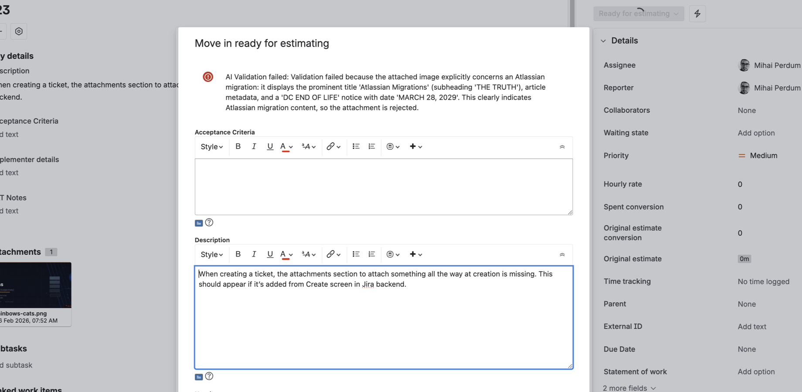
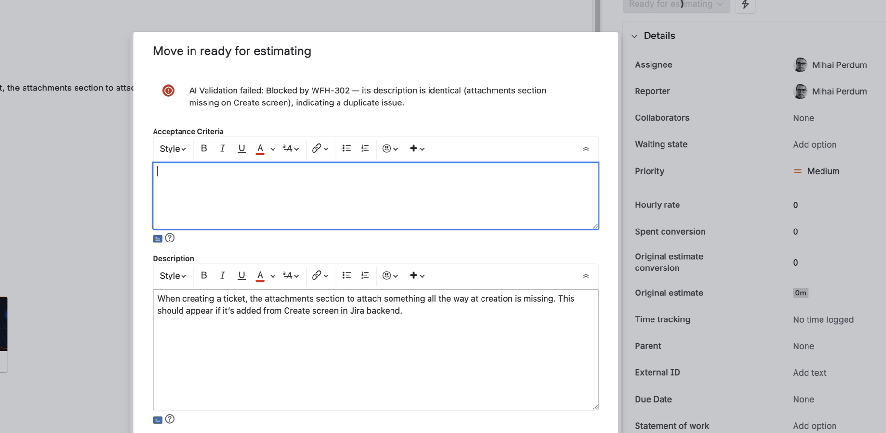
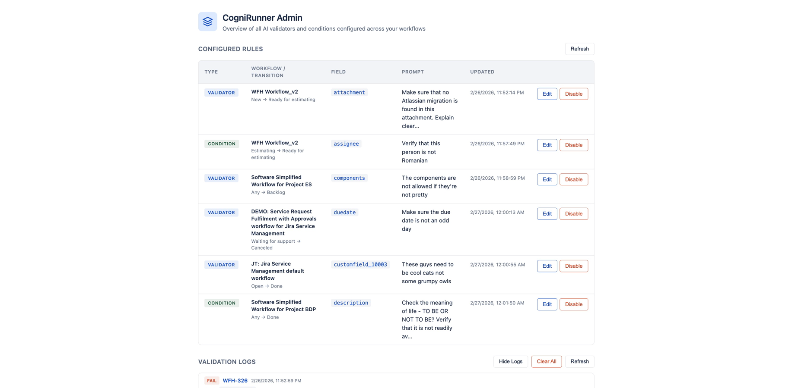

CogniRunner
AI-powered workflow validation for Jira. Validate any field — including attachments — with custom AI prompts during workflow transitions.
Overview
CogniRunner adds AI-powered validators and conditions to Jira workflow transitions. Instead of writing complex rules or scripts, you describe your validation criteria in plain English — and the AI evaluates field content against your prompt every time an issue transitions.
- Validators block a transition if validation fails, showing the user a clear error message with the AI's reasoning.
- Conditions hide a transition entirely if validation fails — the user won't even see the transition button.
CogniRunner works across company-managed and team-managed Jira projects, supports all standard and custom Jira field types, and can even analyze the content of attached files and images.
Getting Started
CogniRunner integrates into Jira's native workflow editor. To add a validator or condition:
- Open your workflow in the Jira workflow editor Select a transition and click the Rules panel on the right side. You'll see rule categories: Restrict transition, Request input, Validate details, and Perform actions.
-
Add a new rule
Click the
+button next to "Validate details" (for validators) or "Restrict transition" (for conditions). In the "Add rule" dialog, find CogniRunner Field Validator under the Marketplace Rules section. - Configure the validator Select the field to validate, write your AI prompt, and optionally configure JQL search for duplicate detection. Click Update to save.


Configuring a Validator or Condition
When you add or edit a CogniRunner rule, you'll see the configuration form with three settings:
- Field to Validate — Which Jira field the AI should evaluate
- Validation Prompt — Your criteria described in natural language
- Jira Search (JQL) — Optional duplicate detection via JQL queries

Field Selector
The field selector dropdown shows all fields available on your project's edit/view screens, grouped by system fields and custom fields. Each entry shows the field name, its internal ID, and its type.

You can search for fields by name using the search box at the top of the dropdown. The selected field determines what content the AI receives for validation.
When you select Attachment, CogniRunner downloads and analyzes the actual content of attached files — not just the filename. See Attachment Content Analysis for supported formats.
Writing Validation Prompts
The validation prompt is where you describe your quality criteria in natural language. The AI evaluates the field content against this prompt and returns a pass/fail result with reasoning.
Good prompts are specific and describe what the content should or should not contain:
- "Check for similar issues and do not allow if it appears to be a duplicated description meaning."
- "Make sure that no Atlassian migration is found in this attachment. Explain clearly to the user the rejection."
- "Verify that this person is not Romanian."
- "The components are not allowed if they're not pretty."
- "Make sure the due date is not an odd day."
The AI's response is always shown to the user when validation fails, so writing prompts that ask the AI to "explain clearly" will produce better error messages.
JQL Search & Duplicate Detection
CogniRunner can search Jira for similar or related issues during validation — enabling AI-powered duplicate detection. The JQL Search setting has three modes:
| Mode | Behavior |
|---|---|
| Auto-detect from prompt | CogniRunner analyzes your prompt text and automatically enables JQL search if it mentions duplicates, similarity, existing issues, or cross-referencing. This is the recommended setting. |
| Always enabled | JQL search is always active, regardless of prompt wording. The AI can run up to 3 rounds of JQL queries to find related issues. |
| Always disabled | No JQL search is performed. Validation is based solely on the field content and prompt. Fastest option. |
When JQL search is active, the AI generates and executes JQL queries against your Jira instance to find related issues. It can run up to 3 rounds of queries, each returning up to 10 results. The AI then uses these results to inform its validation decision.

JQL search adds latency to the validation (up to 22 seconds in the worst case). For simple validations that don't need cross-referencing, use "Always disabled" for the fastest response.
Attachment Content Analysis
When you select Attachment as the field to validate, CogniRunner downloads and analyzes the actual content of attached files. The AI can read documents, spreadsheets, presentations, and understand images — going far beyond simple filename checks.
Supported Document Formats
| Format | Extensions | Processing |
|---|---|---|
.pdf | Full text extraction and analysis | |
| Word | .docx, .doc | Full text extraction and analysis |
| Rich Text | .rtf, .odt | Full text extraction and analysis |
| Excel | .xlsx, .xls | Spreadsheet data extraction |
| CSV / TSV | .csv, .tsv | Tabular data extraction |
| PowerPoint | .pptx, .ppt | Slide content extraction |
Supported Image Formats
| Format | Extensions | Processing |
|---|---|---|
| PNG | .png | AI vision — understands image content |
| JPEG | .jpg, .jpeg | AI vision — understands image content |
| GIF | .gif | AI vision — understands image content |
| WebP | .webp | AI vision — understands image content |
Unsupported file types are gracefully skipped — the AI receives metadata about skipped files (filename, size, type) so it can still reference them in its reasoning.

Validation in Action
When a user attempts a workflow transition, CogniRunner evaluates the configured field against your prompt. If validation fails, the transition is blocked and the AI's reasoning is displayed as an error message directly on the transition screen.

The error message always includes:
- A clear statement that AI Validation failed
- The specific reason for the failure
- When JQL search was used: references to related issue keys
- Enough context for the user to understand what needs to change
Rule Management (Enable / Disable)
Each CogniRunner rule can be enabled or disabled without removing it from the workflow. This is useful for temporarily pausing validation during migrations, bulk updates, or troubleshooting.
Active Rule

Disabled Rule

Admin Panel
The CogniRunner Admin panel provides a centralized view of all AI validators and conditions configured across your Jira workflows. Access it from the Jira Apps menu.

The admin panel shows:
- Configured Rules table — All validators and conditions across every workflow, with type badges, workflow/transition names, field, prompt preview, and last update timestamp.
- Quick actions — Edit or Disable any rule directly from the table without opening the workflow editor.
- Validation Logs — A scrollable history of all validation results, including pass/fail status, issue key, field, AI reasoning, and JQL queries used.
Validation Logs
Every validation — whether it passes or fails — is logged with full context. Logs are available in both the Admin panel and the individual rule summary view.

Each log entry includes:
- Status — PASS or FAIL badge
- Issue key — Links to the Jira issue (e.g., WFH-326)
- Timestamp — When the validation occurred
- Field — Which field was validated (e.g., attachment, description)
- AI reasoning — The full explanation from the AI
- JQL queries — If agentic search was used, the queries that were executed (visible in expanded log view)
Logs are stored in Forge storage with a maximum of 50 entries (FIFO — oldest entries are removed when the limit is reached). Use the "Clear All" button to reset the log history.
Supported Jira Field Types
CogniRunner extracts readable text from any Jira field type and sends it to the AI for validation. All field values are converted to plain text before evaluation.
| Category | Field Types |
|---|---|
| Text | Single-line text, Multi-line text, URL |
| Rich Text | Description, Comments, and other ADF (Atlassian Document Format) fields — full text extraction from rich content |
| Select | Select list (single), Select list (multi), Radio buttons, Checkboxes, Cascading select |
| People | User picker (single), User picker (multi), Group picker (single), Group picker (multi), Reporter, Assignee |
| Date & Time | Date picker, Date/Time picker |
| Numeric | Number, Time tracking (original estimate, remaining estimate, time spent) |
| System | Priority, Status, Resolution, Issue type, Labels, Components, Versions (fix/affects), Sprint |
| Reference | Issue links, Parent issue, Project picker |
| Files | Attachments — with full content analysis (see supported formats) |
| Custom | Any custom field with a readable value — custom types are extracted generically |
Supported Attachment Formats
When validating the Attachment field, CogniRunner downloads and processes files in these formats:
Documents (text extraction)
| Format | MIME Type |
|---|---|
application/pdf | |
| Word (DOCX) | application/vnd.openxmlformats-officedocument.wordprocessingml.document |
| Word (DOC) | application/msword |
| Rich Text (RTF) | application/rtf |
| OpenDocument Text (ODT) | application/vnd.oasis.opendocument.text |
| Excel (XLSX) | application/vnd.openxmlformats-officedocument.spreadsheetml.sheet |
| Excel (XLS) | application/vnd.ms-excel |
| CSV | text/csv |
| TSV | text/tab-separated-values |
| PowerPoint (PPTX) | application/vnd.openxmlformats-officedocument.presentationml.presentation |
| PowerPoint (PPT) | application/vnd.ms-powerpoint |
Images (AI vision analysis)
| Format | MIME Type |
|---|---|
| PNG | image/png |
| JPEG | image/jpeg |
| GIF | image/gif |
| WebP | image/webp |
Limits & Constraints
| Limit | Value | Notes |
|---|---|---|
| Max attachment size (per file) | 10 MB | Files larger than 10 MB are skipped |
| Max total attachment size | 20 MB | Combined size across all attachments per validation |
| Validation timeout | 25 seconds | Forge function time limit; agentic mode budgets 22 seconds |
| JQL search rounds | 3 rounds max | Each round can execute multiple JQL queries |
| JQL results per query | 10 issues | Top 10 matching issues returned per query |
| Validation log history | 50 entries | Oldest entries removed when limit is reached (FIFO) |
| Prompt log truncation | 200 characters | Field values stored in logs are truncated for storage |
Attachments that exceed the size limit or use unsupported formats are gracefully skipped. The AI still receives metadata about skipped files and can reference them in its reasoning.
Environment Variables
CogniRunner requires an OpenAI API key to function. Set environment variables using the Forge CLI:
| Variable | Required | Default | Description |
|---|---|---|---|
OPENAI_API_KEY | Yes | — | Your OpenAI API key for authentication |
OPENAI_MODEL | No | gpt-5-mini | The OpenAI model used for validation |
You are responsible for your own OpenAI API costs. Each validation makes one API call (or multiple if using JQL search mode). Using attachment analysis with large files or images will consume more tokens.